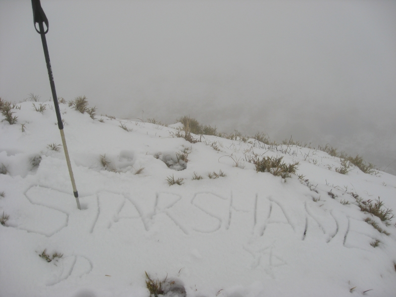

发信人: starshane (老实低调平庸★天府之国★), 信区: outdoor
标 题: 元旦豪华自虐玩雪游
发信站: 饮水思源 (2010年01月03日04:06:40 星期天)
心情愉快地半夜写游记~~
要放弃101的烟火和王力宏SHE五月天林志玲飞轮海的跨年演唱会，本来还挣扎了很久，一
旦下定决心要上山跨年后，就从12月20号开始断绝了娱乐活动，把圣诞PARTY的票都转手卖
了，不吃晚餐练跑……现在回头看，一切都值了。虽然又因不可抗拒力没有走完，但这一
场豪华的元旦自虐赏雪PARTY，也算非常特别。
大概20号确定了路线，预计行程：
DAY 1,从1500M登山口上升1700M，到海拔3308M营地，约12KM
2，轻身原路来回攻小剑山，来回12KM，但上下6个陡坡，高差累加为1700M，来回12小时，
（其实我出发前就打算到时候赖在营地不去这一趟，路况很差）
3，上升至雪山3886M，约12小时
4，陡下山至2014M，约10小时
您说这看了能不让我恐慌么？因为自己确实没走过高山的长线……这路线所依据的记录是
9月份的，听领队说现在山上可能积雪……
实际行程：
D1，在台中领队家会和分好公物后已是半夜1；30，公物我背了套锅炉头蔬菜和一些饼干，
算是少了，但打好包后发现连背帐篷的人人都比我轻，崩溃之余发现人家的背包都很轻…
…
打包得也很精致，当然包都是好包……
screen.width - 200){this.width = screen.width - 200}">
匆忙睡觉，4点起床出发坐车，在车上眯到8点半下车至登山口，居然在下雨……这鬼雨下
了一整天，是一切噩梦的根源。
整装待发。喜剧的事发生了，我拿出向别人借的雨衣（就是我大一时穿那种塑胶雨衣，有
人记得不？），KEAO居然没有帽子……所幸队友学姐给了我一顶鸭舌帽勉强戴戴。
我环顾四周，队上有一对山友俩口子，分别穿的patagonia 功能衣，marmot 外套，arc’
teryx 雨衣，sierra designs 雨裤，SXXX（忘了）的皮质登山鞋；领队也是arc’teryx
雨衣，sierra designs 雨裤，S牌皮登山鞋；另外学姐和学弟也全套atunas雨衣裤，但也
都是雨鞋。看看自己身上罩的塑胶雨衣裤，穿着雨鞋，不禁悲从中来……
总之就出发了，先走了一个小时林道算是热身，然后就来到了第一关：天梯
（申明一点，所有的照片都是下山时照的，上山时一直大雨，根本连相机都没力气掏出来
）
各位，这不是登顶路线，是山脚下~无尽的之字形陡上… 有多长我没有数据，但这样的陡
上走了快2小时，中间休息了5分钟！
天梯
screen.width - 200){this.width = screen.width - 200}">

screen.width - 200){this.width = screen.width - 200}">
screen.width - 200){this.width = screen.width - 200}">
如此上完天梯走到平一点的地方已经11点过了，吃中饭（饼干），再继续走。
第二关：长长的缓坡+陡上+陡下+缓上……
关键是它很长！这一段大概走了3个多小时，期间雨时大时小就是没停过，我处于全身半湿
状态，头发也快湿完了。我安慰自己说可以去营地生火烤，领队冷冷来句“雪山禁止烟火
”，泪崩……
各种陡上
screen.width - 200){this.width = screen.width - 200}">
screen.width - 200){this.width = screen.width - 200}">
screen.width - 200){this.width = screen.width - 200}">
第三关：箭竹雨林！
这时候已经上升到2801M。然后大路瞬间消失变成林洞，因为一直在下雨，加上密林里的雨
水，就是在这片雨林我彻底湿透了，无语的这套雨衣裤不仅没有帽子，裤子上还有洞，水
可以灌到裤腿里……
渐渐路边出现了积雪和冰，变得难走
这一关我一张图片都没有，始终没心情照它
第四关：雪原踟蹰
走完竹林大概到2927M，雨继续下，由于我已全身湿透加上风大，边走边感觉水从头上脸上
滴下，分不清楚是汗水还是雨水，不过倒没有什么负面情绪，只想快点到营地。这时天气
愈差，大家每迈一步都很困难了，有学姐已经走到有点精神恍惚了。但是一休息风一吹我
就冷得要死，在冷死和累死之间，我毅然选择了后者……领队骗人说“快了快了”，于是
不知不觉我走到了队伍最前面开路，这时积雪大概有10几20厘米了，走个十步就想停下来
休息，领队就在后面喊“不要停快走！”泪奔啊~就抱着必死的决心咬牙走着……非常担心
自己会失温……
图片是下山时照的，上山时天气巨差一直下雨
screen.width - 200){this.width = screen.width - 200}">
screen.width - 200){this.width = screen.width - 200}">
终于在天黑前找到了营地，事儿还没完，必须清理营地积雪，只有一把冰斧，我们就用手
挖脚踢，此时无比想念HYP的工兵铲……
把帐篷搭起来天也黑了，大家淋了一天雨都有不同程度的失温，钻进帐篷都抖到不行，真
的是那种情不自禁抑制不住的抖，领队脱掉外套钻进睡袋边抖边睡，其他两人换了衣服都
累到坐着睡着了，我脱掉了所有湿的衣服，只剩一件稍微干的短袖速干T，然后换上干的抓
绒内衣、羽绒和棉裤，感觉稍微好了点。领队一直在抖，我后来总结是因为他没有把湿的
衣服脱光就钻睡袋，企图用体温烘干衣服。有那么一会儿帐篷里很安静，大家都睡着了，
我却不想睡，发现另外一个帐篷也静悄悄的（后来知道俩人也是冻得不行躺着睡着了，哼
哼，装备再好又怎样），居然没有人在煮热水，赶忙把学姐摇醒煮热奶茶、泡面，总算活
过来一些。
然后开始煮晚餐。煮了炸酱面、泡菜猪肉炒年糕、鱼仔贡丸蔬菜汤、各种饮料，吃得很愉
快。
弄完都快11点了。痛苦的时刻来临了，大家轮流出去上厕所，结果领队大概因为前面探路
找营地时踩到雪沟里，彻底破功，上完厕所回来颤抖不止直说不能呼吸了，把我们吓得半
死，学弟就把他紧紧抱住再围上睡袋，这样过了四五分钟他才恢复过来。
领队意志消沉，完全打消了攻小剑山的念头，说明天睡到自然醒再看天行事。
任它一晚风吹雨打，任那防潮垫只是薄薄的一片……我靠着暖宝宝、羽绒睡袋还有一天的
倦意，算是睡了个好觉。
第二天，一觉到九点，睁开眼居然有阳光，钻出帐篷看见蓝天白雪，没有雨雪，真愉快~登
高远望，看见原定第二天、第三天要走的岭线，都积深雪，远处的雪山更是埋首云层。
我提出想照原订的第三的路线走，单攻另一座大剑山，来回6小时，完全没人附和，学长说
大剑路太险，积雪难登。我看所有人都游乐意志大于登山，只好作罢。
原本要走的路线，左边是大剑山，后面被云遮住的是雪山3886M
很优美的岭线
screen.width - 200){this.width = screen.width - 200}">
screen.width - 200){this.width = screen.width - 200}">
望天池
screen.width - 200){this.width = screen.width - 200}">
很欢乐
screen.width - 200){this.width = screen.width - 200}">
滑雪
screen.width - 200){this.width = screen.width - 200}">
轻身在营地周围闲逛，积雪约有30多厘米，在雪地里走不了多久就喘，而且很快又开始起
雾……果然高山天气难以捉摸……探往两座山的路，都是森林积雪…更是深浅难辨
screen.width - 200){this.width = screen.width - 200}">
逛完回去建造营地，铲除冰雪固定营钉修雪墙堆雪人玩滑雪……不一而足。晚餐咖喱鸡肉
饭味增汤肉松等等，吃得很爽。晚上因为没有倦意，被冷醒数次。
screen.width - 200){this.width = screen.width - 200}">
第三天，下撤……
一早居然下起了雪，有一家四口上来玩，真佩服小孩子体力……接着又有几支登山队，走
上来看到这个情况都有点进退两难，领队倒是很坦然地往下走了。下山就是陡下到腿软，
一边走一边怀疑前天真的有走这么多路吗？ 不表。
screen.width - 200){this.width = screen.width - 200}">
screen.width - 200){this.width = screen.width - 200}">
 screen.width - 200){this.width = screen.width - 200}">
完
--
人来世间就是为了忍受各种各样的痛苦和极乐为虚幻的绝望
忍
※ 来源:·饮水思源 bbs.sjtu.edu.cn·[FROM: 140.112.229.197]
|